File: 000509.gt.txt (if the image is defective, simply delete all Arabic text and the line will be excluded)

« العفو والعفو والعفو والعفا » : ولد الحمار ، وأنشد المفضل(6) :
File: 000510.gt.txt (if the image is defective, simply delete all Arabic text and the line will be excluded)

أجبتك(1) [638 ] وثنوه على جهة التأكيد، أي : قد أجبتك إجابة بعد
File: 000511.gt.txt (if the image is defective, simply delete all Arabic text and the line will be excluded)

إجابة، ونصبوه على جهة المصدر كما تقول : حمدا لله وشكرا، ومثله
File: 000512.gt.txt (if the image is defective, simply delete all Arabic text and the line will be excluded)

« حنانيك » .
File: 000513.gt.txt (if the image is defective, simply delete all Arabic text and the line will be excluded)

وقال أبو عبيدة في قول الشاعر(2) :
File: 000514.gt.txt (if the image is defective, simply delete all Arabic text and the line will be excluded)

فقلت لها: فيئي إليك؛ فإنني حرام،وإني بعد ذاك لبيب
File: 000515.gt.txt (if the image is defective, simply delete all Arabic text and the line will be excluded)

أراد ملب(3) .
File: 000516.gt.txt (if the image is defective, simply delete all Arabic text and the line will be excluded)

قال البصريون في تقدير « قضاة » و« رماة » وأشباه ذلك في المعتل :
File: 000517.gt.txt (if the image is defective, simply delete all Arabic text and the line will be excluded)

فعلة ، ولا يكون هذا في جمع الصحيح .
File: 000518.gt.txt (if the image is defective, simply delete all Arabic text and the line will be excluded)

وحكى الفراء عن بعض النحويين أنه قال : تقديره « فعلة » ، مثل
File: 000519.gt.txt (if the image is defective, simply delete all Arabic text and the line will be excluded)

« كافر وكفرة » و« فاجر وفجرة » إلا أنهم خصوا الياء والواو بضم أوله .
File: 000520.gt.txt (if the image is defective, simply delete all Arabic text and the line will be excluded)

قال الفراء : وليس ذلك كما قالوا ؛ لأناقد وجدنا « سريا(4) من قوم
File: 000521.gt.txt (if the image is defective, simply delete all Arabic text and the line will be excluded)

سراة » فلو كان كما قالوا لقيل « سراة » ، فتجنبوا الجمع على فعلة ، ولكنهم
File: 000523.gt.txt (if the image is defective, simply delete all Arabic text and the line will be excluded)

« يزني » وأزني ، منسوب إلى ذي يزن ، ورجل « يلندد » وألندد : الخصم،
File: 000524.gt.txt (if the image is defective, simply delete all Arabic text and the line will be excluded)

ورجل « يلمعي » وألمعي : الذكي ، « وأعصر » ويعصر ، و«الأرندج »
File: 000525.gt.txt (if the image is defective, simply delete all Arabic text and the line will be excluded)

واليرندج : الجلد الأسود ، و«يلملم » وألملم : ميقات أهل اليمن في
File: 000526.gt.txt (if the image is defective, simply delete all Arabic text and the line will be excluded)

إحرامهم ، و« يلنجوج » وألنجوج : العود الذي يتبخر به ، وطير « يناديد »
File: 000527.gt.txt (if the image is defective, simply delete all Arabic text and the line will be excluded)

وأناديد : متفرقة بمعنى أبابيل ، و« عظاءة وعظاية » ، و« عباءة وعباية » ،
File: 000528.gt.txt (if the image is defective, simply delete all Arabic text and the line will be excluded)

و« صلاءة وصلاية » .
File: 000529.gt.txt (if the image is defective, simply delete all Arabic text and the line will be excluded)

باب ما يقال بالهمز وبالواو(1)
File: 000530.gt.txt (if the image is defective, simply delete all Arabic text and the line will be excluded)

« وشاح وإشاح » ، و« وعاء وإعاء » ، و« إكاف ووكاف » ، و« اوسادة
File: 000531.gt.txt (if the image is defective, simply delete all Arabic text and the line will be excluded)

وإسادة » ، و« وقاء وإقاء » .
File: 000532.gt.txt (if the image is defective, simply delete all Arabic text and the line will be excluded)

باب ما جاء فيه ثلاث لغات من(2) بنات الثلاثة
File: 000533.gt.txt (if the image is defective, simply delete all Arabic text and the line will be excluded)

« رأيته قبلا وقبلا وقبلا » أي : معاينة ، و« خرص الرمح وخرصه
File: 000534.gt.txt (if the image is defective, simply delete all Arabic text and the line will be excluded)

وخرصه »(3) ، و« قطب الرحا وقطب وقطب » ، و«هو العمر والعمر
File: 000535.gt.txt (if the image is defective, simply delete all Arabic text and the line will be excluded)

والعمر » ، وكذلك « العصر والعصر والعصر » : الدهر ، وهو« الولد والولد
File: 000536.gt.txt (if the image is defective, simply delete all Arabic text and the line will be excluded)

والولد » [594 ] وهو« الرغم والرغم والرغم » وهو « المشط والمشط
File: 000537.gt.txt (if the image is defective, simply delete all Arabic text and the line will be excluded)

والمشط » ، و« سقط الرمل وسقط وسقط » أي : منقطعه ، وسقط المرأة
File: 000538.gt.txt (if the image is defective, simply delete all Arabic text and the line will be excluded)

والنار فيه اللغات الثلاث(4) ، و« الفتك والفتك والفتك » أن يقتل(5) الرجل
File: 000539.gt.txt (if the image is defective, simply delete all Arabic text and the line will be excluded)

المعتل يوصف به الجميع ، وذلك قولك « قوم عدى » وهو مما جاء على غير
File: 000540.gt.txt (if the image is defective, simply delete all Arabic text and the line will be excluded)

واحدة ، وقال غيره : وقد جاء «مكان سوى »(1) .
File: 000541.gt.txt (if the image is defective, simply delete all Arabic text and the line will be excluded)

وقال سيبويه(2) : لا نعلم(3) في الكلام « أفعلاء » إلا « الأربعاء » .
File: 000542.gt.txt (if the image is defective, simply delete all Arabic text and the line will be excluded)

قال أبو محمد(4) : قال لي أبو حاتم : قال لي(5) أبو زيد : وقد جاء
File: 000543.gt.txt (if the image is defective, simply delete all Arabic text and the line will be excluded)

« الأرمداء » ، وهو الرماد العظيم ، وأنشد(6) :
File: 000544.gt.txt (if the image is defective, simply delete all Arabic text and the line will be excluded)

لم يبق هذا الدهر من آيائه غير أثافيه وأرمدائه
File: 000545.gt.txt (if the image is defective, simply delete all Arabic text and the line will be excluded)

جمع آي(7) على آياء وهو أفعال .
File: 000546.gt.txt (if the image is defective, simply delete all Arabic text and the line will be excluded)

وقال سيبويه(8) : وليس في الكلام [ 612 ] « يفعول » فأما قولهم :
File: 000547.gt.txt (if the image is defective, simply delete all Arabic text and the line will be excluded)

« يسروع » فإنهم ضموا الياء لضمة الراء ، كما قالوا : « الأسود بن يعفر »
File: 000548.gt.txt (if the image is defective, simply delete all Arabic text and the line will be excluded)

فضموا الياء لضمة الفاء ، ويقوي هذا أنه ليس في الكلام يفعل .
File: 000549.gt.txt (if the image is defective, simply delete all Arabic text and the line will be excluded)

وأما قولهم : « أحببته فهو محبوب » ، و« أجنه الله فهو مجنون » ،
File: 000550.gt.txt (if the image is defective, simply delete all Arabic text and the line will be excluded)

و« أحمه فهو محموم » ، و« أزكمه الله فهو مزكوم » ، ومثله « مكزوز »
File: 000551.gt.txt (if the image is defective, simply delete all Arabic text and the line will be excluded)

و« مقرور » فإنه بني على « فعل » ؛ لأنهم يقولون في جميع هذه فعل بغير
File: 000552.gt.txt (if the image is defective, simply delete all Arabic text and the line will be excluded)

ألف ، يقولون « حب » و« جن » و« زكم » و« حم » و« قر » و« كز » ، قال :
File: 000553.gt.txt (if the image is defective, simply delete all Arabic text and the line will be excluded)

ولا يقال : « قد حزنه الأمر » ولكن يقال « أحزنه » ، ويقولون « يحزنه » فإذا
File: 000554.gt.txt (if the image is defective, simply delete all Arabic text and the line will be excluded)

قالوا « أفعله » الله فكله بالألف ، ولا يقال « مفعل » في شيء [636] من
File: 000555.gt.txt (if the image is defective, simply delete all Arabic text and the line will be excluded)

هذه ، إلا في حرف واحد ؛ قال عنترة(1) :
File: 000556.gt.txt (if the image is defective, simply delete all Arabic text and the line will be excluded)

ولقد نزلت فلا تظني غيره مني بمنزلة المحب المكرم
File: 000557.gt.txt (if the image is defective, simply delete all Arabic text and the line will be excluded)

قال البصريون : تقدير « إنسان » فعلان ، زيدت الياء في تصغيره كما
File: 000558.gt.txt (if the image is defective, simply delete all Arabic text and the line will be excluded)

زيدت في تصغير ليلة فقيل(2) « لييلية » ، وفي تصغير رجل فقيل(2)
File: 000559.gt.txt (if the image is defective, simply delete all Arabic text and the line will be excluded)

« رويجل » .
File: 000560.gt.txt (if the image is defective, simply delete all Arabic text and the line will be excluded)

وقال بعض البغداديين : الأصل فيه « إنسيان » على(3) زنة إفعلان ؛
File: 000561.gt.txt (if the image is defective, simply delete all Arabic text and the line will be excluded)

فحذفت الياء استخفافا ؛ لكثرة ما يجري على ألسنتهم ، فإذا صغروه قالوا
File: 000562.gt.txt (if the image is defective, simply delete all Arabic text and the line will be excluded)
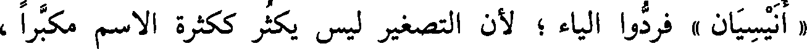
« أنيسيان » فردوا الياء ؛ لأن التصغير ليس يكثر ككثرة الاسم مكبرا ،
File: 000563.gt.txt (if the image is defective, simply delete all Arabic text and the line will be excluded)

وقالوا(3) في الجميع « أناسي » . وكذلك إنسان العين ؛ وقالوا(4) : « أناس »
File: 000564.gt.txt (if the image is defective, simply delete all Arabic text and the line will be excluded)

في الناس ، ولا يقال ذلك في إنسان العين .
File: 000565.gt.txt (if the image is defective, simply delete all Arabic text and the line will be excluded)
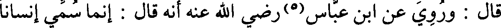
قال : وروي عن ابن عباس(5) رضي الله عنه أنه قال : إنما سمي إنسانا
File: 000566.gt.txt (if the image is defective, simply delete all Arabic text and the line will be excluded)

قال : « وفعالة » تأتي كثيرا في فضلة الشيء وفيما يسقط منه(1) ،
File: 000567.gt.txt (if the image is defective, simply delete all Arabic text and the line will be excluded)
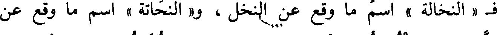
ف « النخالة » اسم ما وقع عن النخل ، و« النحاتة » اسم ما وقع عن
File: 000568.gt.txt (if the image is defective, simply delete all Arabic text and the line will be excluded)

النحت ، و« القوارة » اسم ما وقع عن التقوير ، و« قلامة الظفر » اسم ما وقع
File: 000569.gt.txt (if the image is defective, simply delete all Arabic text and the line will be excluded)

عن التقليم(2) ، و« السحالة » اسم ما وقع عن السحل ، و« الخلالة » اسم ما
File: 000570.gt.txt (if the image is defective, simply delete all Arabic text and the line will be excluded)

وقع(3) عن التخلل [606] من الفم ، و« الكساحة » اسم ما نبذ عن
File: 000571.gt.txt (if the image is defective, simply delete all Arabic text and the line will be excluded)
الكسح .
File: 000572.gt.txt (if the image is defective, simply delete all Arabic text and the line will be excluded)

وكذلك « القمامة » اسم ما وقع(4) عن القم ، وهو الكسح ،
File: 000573.gt.txt (if the image is defective, simply delete all Arabic text and the line will be excluded)

و « الفضالة » اسم ما بقي بعد الأخذ ، و « النفاية » اسم ما بقي بعد
File: 000574.gt.txt (if the image is defective, simply delete all Arabic text and the line will be excluded)

الاختيار .
File: 000575.gt.txt (if the image is defective, simply delete all Arabic text and the line will be excluded)

قال : وبنوا(5) « النقاوة من الشيء » بناء النفاية ؛ إذ كان ضده ؛ لأنهم
File: 000576.gt.txt (if the image is defective, simply delete all Arabic text and the line will be excluded)

كثيرا ما يبنون الشيء على بناء ضده .
File: 000577.gt.txt (if the image is defective, simply delete all Arabic text and the line will be excluded)
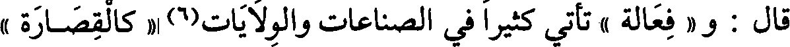
قال : و « فعالة » تأتي كثيرا في الصناعات والولايات(6) « كالقصارة »
File: 000578.gt.txt (if the image is defective, simply delete all Arabic text and the line will be excluded)

و« النجارة » و « الخياطة » و « الوكالة » و « الوصاية » و « « الجراية »
File: 000579.gt.txt (if the image is defective, simply delete all Arabic text and the line will be excluded)
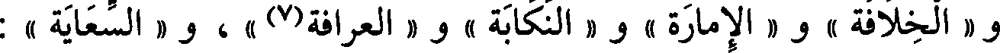
و « الخلافة » و « الامارة » و « النكابة » و « العرافة(7) » ، و « السعاية » :
File: 000580.gt.txt (if the image is defective, simply delete all Arabic text and the line will be excluded)

ولاية الصدقات، و « الإبالة » حسن القيام على الإبل، و « العياسة » ،
File: 000581.gt.txt (if the image is defective, simply delete all Arabic text and the line will be excluded)

و « السياسة » .
File: 000582.gt.txt (if the image is defective, simply delete all Arabic text and the line will be excluded)

باب فعل وفعال
File: 000583.gt.txt (if the image is defective, simply delete all Arabic text and the line will be excluded)

« رجل(1) وحلال » ، و« حرم وحرام » .
File: 000584.gt.txt (if the image is defective, simply delete all Arabic text and the line will be excluded)

باب فعل وفعال
File: 000585.gt.txt (if the image is defective, simply delete all Arabic text and the line will be excluded)
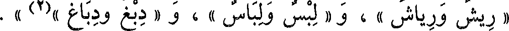
« ريش ورياش » ، و « لبس ولباس » ، و « دبغ ودباغ »(2) » .
File: 000586.gt.txt (if the image is defective, simply delete all Arabic text and the line will be excluded)
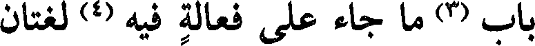
باب (3) ما جاء على فعالة فيه (4) لغتان
File: 000587.gt.txt (if the image is defective, simply delete all Arabic text and the line will be excluded)

فعالة وفعالة
File: 000588.gt.txt (if the image is defective, simply delete all Arabic text and the line will be excluded)

هي« الرطانة والرطانة » ، و« الوقاية والوقاية » ، و« الوكالة [575 ]
File: 000589.gt.txt (if the image is defective, simply delete all Arabic text and the line will be excluded)

والوكالة » ودليل بين « الدلالة والدلالة » ومهرت الشيء « مهارة ومهارة »
File: 000590.gt.txt (if the image is defective, simply delete all Arabic text and the line will be excluded)

و« الوصاية والوصاية » ، و« الجنازة والجنازة » و« الجراية والجراية » ،
File: 000591.gt.txt (if the image is defective, simply delete all Arabic text and the line will be excluded)

و« البداوة والبداوة » و« الحضارة والحضارة » ، و« الولاية » من الموالاة ،
File: 000592.gt.txt (if the image is defective, simply delete all Arabic text and the line will be excluded)

و« الولاية » و« الوزارة والوزارة » والكسر أجود ، « والرضاعة والرضاعة » ،
File: 000593.gt.txt (if the image is defective, simply delete all Arabic text and the line will be excluded)
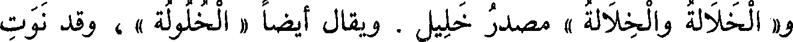
و« الخلالة والخلالة » مصدر خليل . ويقال أيضا « الخلولة » ، وقد نوت
File: 000594.gt.txt (if the image is defective, simply delete all Arabic text and the line will be excluded)
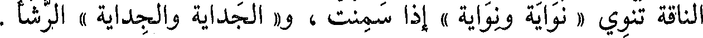
الناقة تنوي « نواية ونواية » إذا سمنت ، و« الجداية والجداية » الرشأ .
File: 000595.gt.txt (if the image is defective, simply delete all Arabic text and the line will be excluded)

باب ما جاء(1) فيه لغتان من حروف مختلفة الأبنية
File: 000596.gt.txt (if the image is defective, simply delete all Arabic text and the line will be excluded)

ما يضم ويكسر
File: 000597.gt.txt (if the image is defective, simply delete all Arabic text and the line will be excluded)

« القرطم والقرطم » ، و« الحولاء والحولاء »(2)، و« أثفية وإثفية » ،
File: 000598.gt.txt (if the image is defective, simply delete all Arabic text and the line will be excluded)
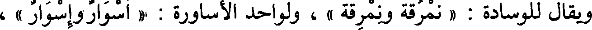
ويقال للوسادة : « نمرقة ونمرقة » ، ولواحد الأساورة : « أسوار وإسوار » ،
File: 000599.gt.txt (if the image is defective, simply delete all Arabic text and the line will be excluded)

و« أخوة وإخوة » جمع أخ ، و« قضبان وقضبان » جمع قضيب ، و« قثاء
File: 000600.gt.txt (if the image is defective, simply delete all Arabic text and the line will be excluded)

وقثاء » .
File: 000601.gt.txt (if the image is defective, simply delete all Arabic text and the line will be excluded)
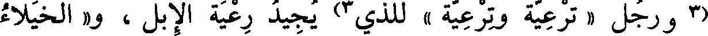
(3 ورجل « ترعية وترعية » للذي 3) يجيد رعية الإبل ، و« الخيلاء
File: 000602.gt.txt (if the image is defective, simply delete all Arabic text and the line will be excluded)
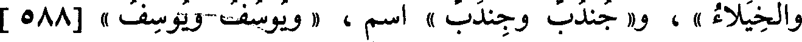
والخيلاء » ، و« جندب وجندب » اسم، « يوسف ويوسف » [588 ]
File: 000603.gt.txt (if the image is defective, simply delete all Arabic text and the line will be excluded)
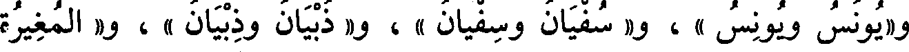
و« يونس ويونس » ، و« سفيان وسفيان » ، و« ذبيان وذبيان » ، و« المغيرة
File: 000604.gt.txt (if the image is defective, simply delete all Arabic text and the line will be excluded)
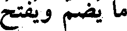
ما يضم ويفتح
File: 000605.gt.txt (if the image is defective, simply delete all Arabic text and the line will be excluded)

والمغيرة » .
File: 000606.gt.txt (if the image is defective, simply delete all Arabic text and the line will be excluded)

« الجدري والجدري » ، و« قوم كسالى وكسالى » ، و« عجالى
File: 000607.gt.txt (if the image is defective, simply delete all Arabic text and the line will be excluded)

وعجالى » ، و« غيارى وغيارى » و« سكارى وسكارى » ، و« جاء القوم
File: 000608.gt.txt (if the image is defective, simply delete all Arabic text and the line will be excluded)

ما يكسر ويفتح
File: 000609.gt.txt (if the image is defective, simply delete all Arabic text and the line will be excluded)
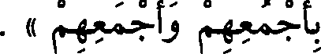
بأجمعهم وأجمعهم » .
File: 000610.gt.txt (if the image is defective, simply delete all Arabic text and the line will be excluded)

« منجنيق ومنجنيق » ، و« ديماس وديماس » ، و« الشريان والشريان »
File: 000611.gt.txt (if the image is defective, simply delete all Arabic text and the line will be excluded)

شجر(4) تعمل منه القسي .
File: 000612.gt.txt (if the image is defective, simply delete all Arabic text and the line will be excluded)

« خشاش وخشاش » وهو اللطيف الرأس الضرب الجسم ، وجارية بينة
File: 000613.gt.txt (if the image is defective, simply delete all Arabic text and the line will be excluded)

« الشطاط والشطاط »والشطاطة ، وجارية بينة « الجراء والجراء » مصدر
File: 000614.gt.txt (if the image is defective, simply delete all Arabic text and the line will be excluded)

جارية ، ليس بيني وبينه« وجاح ووجاح » و« أجاح وإجاح » أي : ستر .
File: 000615.gt.txt (if the image is defective, simply delete all Arabic text and the line will be excluded)

وحكي عن ابن الأعرابي « سداد من عوز وسداد » وهذا « قوامهم
File: 000616.gt.txt (if the image is defective, simply delete all Arabic text and the line will be excluded)

وقوامهم »، و « الوثاق والوثاق » ، وأيام « الحصاد والحصاد » ،
File: 000617.gt.txt (if the image is defective, simply delete all Arabic text and the line will be excluded)

و « القطاف والقطاف » ، و « الجزاز والجزاز » لجزاز(1) النخل والغنم ،
File: 000618.gt.txt (if the image is defective, simply delete all Arabic text and the line will be excluded)

و « الجداد والجداد » ، و « الصرام والصرام » ، و« القطاع والقطاع » ،
File: 000619.gt.txt (if the image is defective, simply delete all Arabic text and the line will be excluded)

و « الكناز والكناز » حين يكنز التمر ، و « الجرام والجرام » ، و« الرفاع
File: 000620.gt.txt (if the image is defective, simply delete all Arabic text and the line will be excluded)

والرفاع » حين يحصد الزرع فيرفع .
File: 000621.gt.txt (if the image is defective, simply delete all Arabic text and the line will be excluded)

قال الكسائي : سمعت أخواتها بالوجهين ، إلا « الرفاع » ؛فإني لم
File: 000622.gt.txt (if the image is defective, simply delete all Arabic text and the line will be excluded)

أسمعها مكسورة . وقمر« تمام وتمام » ، وولد(2) « تمام وتمام »، و« ليل
File: 000623.gt.txt (if the image is defective, simply delete all Arabic text and the line will be excluded)

باب فعال وفعال
File: 000624.gt.txt (if the image is defective, simply delete all Arabic text and the line will be excluded)

تمام «» لا غير.
File: 000625.gt.txt (if the image is defective, simply delete all Arabic text and the line will be excluded)

« سوار المرأة وسوار » ، و« هو حسن الجوار والجوار » ، و« حوار
File: 000626.gt.txt (if the image is defective, simply delete all Arabic text and the line will be excluded)

الناقة وحوار » ، و« شواظ من النار(3) وشواظ »، و« خوان وخوان » للذي
File: 000627.gt.txt (if the image is defective, simply delete all Arabic text and the line will be excluded)

يؤكل [ 570 ] عليه ، و« الهيام والهيام » داء يأخذ الإبل ، و« النداء
File: 000628.gt.txt (if the image is defective, simply delete all Arabic text and the line will be excluded)

والنداء » ، و« الهتاف والهتاف » ، و« رجل شجاع وشجاع» ، و« قوم
File: 000629.gt.txt (if the image is defective, simply delete all Arabic text and the line will be excluded)

باب ما يقال بالياء والواو
File: 000630.gt.txt (if the image is defective, simply delete all Arabic text and the line will be excluded)

رجل « سبروت وسبريت » ، وبينهما « بون » في الفضل ، و« بين » ،
File: 000631.gt.txt (if the image is defective, simply delete all Arabic text and the line will be excluded)

فأما في البعد فلا يقال(1) إلا « بين » ؛ أتانا ل«توفاق » الهلال و«تيفاق »
File: 000632.gt.txt (if the image is defective, simply delete all Arabic text and the line will be excluded)

الهلال(2) ؛أي : حين أهل الهلال ؛ وهو يمشي « الخوزلى »
File: 000633.gt.txt (if the image is defective, simply delete all Arabic text and the line will be excluded)

و« الخيزلى » ؛ وهي « العجاوة » و« العجاية » ، لعصبة تكون(3) في فرسن
File: 000634.gt.txt (if the image is defective, simply delete all Arabic text and the line will be excluded)

البعير ، وهو سريع « الأبية » و« الأوبة » ؛ وهي « المصائب »
File: 000635.gt.txt (if the image is defective, simply delete all Arabic text and the line will be excluded)

و«المصاوب » ، أجد بقلبي « لوطا » و« ليطا » ؛ وهذه « نقاوة » الشيء
File: 000636.gt.txt (if the image is defective, simply delete all Arabic text and the line will be excluded)

و« نقايته » ، أي : خياره ، وفلان « أحول » منك(4) و«أحيل » ، من
File: 000637.gt.txt (if the image is defective, simply delete all Arabic text and the line will be excluded)

الحيلة ؛ وهو « المتأوب » و«المتأيب » ، وهو من « صيابة » قومه
File: 000638.gt.txt (if the image is defective, simply delete all Arabic text and the line will be excluded)

و« صوابتهم » ، أي : صميمهم ؛ وداهية « دهياء » و« دهواء» ؛ وأرض
File: 000639.gt.txt (if the image is defective, simply delete all Arabic text and the line will be excluded)

« مسنوة » و« مسنية » ؛ وفلان « مرضو » و« مرضي » ، و« مجفو »
File: 000640.gt.txt (if the image is defective, simply delete all Arabic text and the line will be excluded)

و« مجفي » ، قال الشاعر(5) :
File: 000641.gt.txt (if the image is defective, simply delete all Arabic text and the line will be excluded)

ما أنا بالجافي ولا المجفي
File: 000642.gt.txt (if the image is defective, simply delete all Arabic text and the line will be excluded)

قال : بناه على جفي ، وقال الآخر(6) : [ 592 ]
File: 000643.gt.txt (if the image is defective, simply delete all Arabic text and the line will be excluded)

« عور » ، و« شتر » و« صلع » و« قطع » ، و« أدر » ، و« حبن » ،
File: 000644.gt.txt (if the image is defective, simply delete all Arabic text and the line will be excluded)

و« هوج » .
File: 000645.gt.txt (if the image is defective, simply delete all Arabic text and the line will be excluded)

وشذ منه شيء فقالوا : « مال » في الأميل ، والقياس « ميل » ، وقالوا
File: 000646.gt.txt (if the image is defective, simply delete all Arabic text and the line will be excluded)

في الأشيب « شاب » شبهوه بشاخ ، والقياس « شيب » مثل صيد يصيد
File: 000647.gt.txt (if the image is defective, simply delete all Arabic text and the line will be excluded)

وشمط يشمط .
File: 000648.gt.txt (if the image is defective, simply delete all Arabic text and the line will be excluded)

قالوا : والأدواء(1) إذا كانت على « فعال » أتت بضم الفاء ، مثل
File: 000649.gt.txt (if the image is defective, simply delete all Arabic text and the line will be excluded)

« القلاب » ، [604] و« الخمال » ، و« النحاز » ، و« الدكاع » ،
File: 000650.gt.txt (if the image is defective, simply delete all Arabic text and the line will be excluded)

و« السهام » ، و« السكات » ، و« الصفار » ، و« الصداع » ، و « الكباد » ،
File: 000651.gt.txt (if the image is defective, simply delete all Arabic text and the line will be excluded)

و« البوال » ، و « الدوار » ، و « الخمار » لأنه داء ، و« العطاش » ،
File: 000652.gt.txt (if the image is defective, simply delete all Arabic text and the line will be excluded)

و« الهيام » ، يقال : عطش عطشا ، وإذا كان العطش يعتريه كثيرا قالوا « به
File: 000653.gt.txt (if the image is defective, simply delete all Arabic text and the line will be excluded)

عطاش » ، وتقول(2) : قاء يقيء قيئا ، فإذا كان القيء يعتريه كثيرا(3)
File: 000654.gt.txt (if the image is defective, simply delete all Arabic text and the line will be excluded)

قالت(4) : « به قياء » ؛ وتقول : فلان يقوم(5) قياما كثيرا إذا أردت أنه يختلف
File: 000655.gt.txt (if the image is defective, simply delete all Arabic text and the line will be excluded)

إلى المتوضأ ، فإن أردت اسم ما به قلت « به قوام » .
File: 000656.gt.txt (if the image is defective, simply delete all Arabic text and the line will be excluded)

هذا كله وأشباهه بضم الفاء من « فعال » ، إلا حرفا واحدا ، كان أبو
File: 000657.gt.txt (if the image is defective, simply delete all Arabic text and the line will be excluded)

عمرو الشيباني يفتح أوله ، وتابعه على ذلك عمارة(6) وهو « السواف » داء من
File: 000658.gt.txt (if the image is defective, simply delete all Arabic text and the line will be excluded)

أدواء الإبل ، وكان الأصمعي يضم أوله ، ويلحقه بأمثاله من الأدواء .
File: 000659.gt.txt (if the image is defective, simply delete all Arabic text and the line will be excluded)

على بناء أمثاله ، مثل : عظيم، وكبير ، وثقيل ، وبطيء، وغليظ، فأجازوا
File: 000660.gt.txt (if the image is defective, simply delete all Arabic text and the line will be excluded)

فيه « ضخاما » على أصل الحرف .
File: 000661.gt.txt (if the image is defective, simply delete all Arabic text and the line will be excluded)

وقد(1) بينت أمثلة هذه الحروف وأضدادها .
File: 000662.gt.txt (if the image is defective, simply delete all Arabic text and the line will be excluded)

وروى أبو عبيدة عن المؤرج في الأمثال(2) : « نزو الفرار استجهل
File: 000663.gt.txt (if the image is defective, simply delete all Arabic text and the line will be excluded)

الفرارا » .
File: 000664.gt.txt (if the image is defective, simply delete all Arabic text and the line will be excluded)
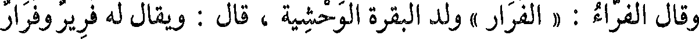
وقال الفراء: « الفرار » ولد البقرة الوحشية ، قال : ويقال له فرير وفرار
File: 000665.gt.txt (if the image is defective, simply delete all Arabic text and the line will be excluded)

مثل طويل وطوال ، وكان [573 ] غيره يزعم أن « فرارا » جمع فرير .
File: 000666.gt.txt (if the image is defective, simply delete all Arabic text and the line will be excluded)
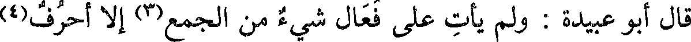
قال أبو عبيدة : ولم يأت على فعال شيء من الجمع(3) إلا أحرف(4)
File: 000667.gt.txt (if the image is defective, simply delete all Arabic text and the line will be excluded)
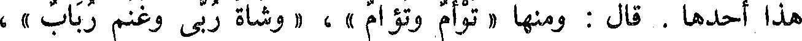
هذا أحدها . قال : ومنها « توأم وتؤام » ، « وشاة ربى وغنم رباب » ،
File: 000668.gt.txt (if the image is defective, simply delete all Arabic text and the line will be excluded)
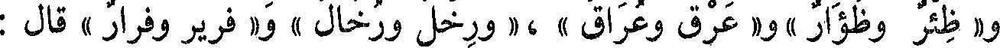
و« ظئر وظؤار » و« عرق وعراق » ،« ورخل ورخال » و« فرير وفرار » قال :
File: 000669.gt.txt (if the image is defective, simply delete all Arabic text and the line will be excluded)

ولا نظير لهذه الأحرف .
File: 000670.gt.txt (if the image is defective, simply delete all Arabic text and the line will be excluded)

قال أبو عبيدة : فإذا أرادوا المبالغة شددوا فقالوا « كرام » و« كبار »
File: 000671.gt.txt (if the image is defective, simply delete all Arabic text and the line will be excluded)

و« ظراف » و« عجاب » ، فالكرام : أشد كرما من الكرام .
File: 000672.gt.txt (if the image is defective, simply delete all Arabic text and the line will be excluded)

وقد يجيء من المشدد ما ليس من هذا الباب قالوا « حسان » للحسن ،
File: 000673.gt.txt (if the image is defective, simply delete all Arabic text and the line will be excluded)

و« قراء » للقارىء ، و« وضاء » للوضيء .
File: 000674.gt.txt (if the image is defective, simply delete all Arabic text and the line will be excluded)
وطعن كتشهاق العفا هم بالنهق
File: 000675.gt.txt (if the image is defective, simply delete all Arabic text and the line will be excluded)
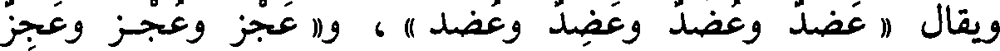
ويقال « عضد وعضد وعضد وعضد » ، و« عجز وعجز وعجز
File: 000676.gt.txt (if the image is defective, simply delete all Arabic text and the line will be excluded)

وعجز » ، و« نطع ونطع ونطع ونطع »، و« شغل(2) وشغل وشغل
File: 000677.gt.txt (if the image is defective, simply delete all Arabic text and the line will be excluded)
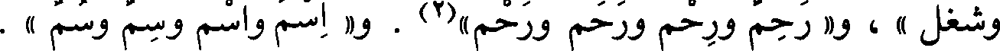
وشغل » ، و« رحم ورحم ورحم ورحم »(2) . و« اسم واسم وسم وسم » .
File: 000678.gt.txt (if the image is defective, simply delete all Arabic text and the line will be excluded)
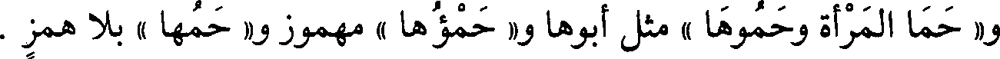
و« حما المرأة وحموها » مثل أبوها و« حمؤها » مهموز و« حمها » بلا همز .
File: 000679.gt.txt (if the image is defective, simply delete all Arabic text and the line will be excluded)
باب ما جاء فيه أربع لغات
File: 000680.gt.txt (if the image is defective, simply delete all Arabic text and the line will be excluded)

من حروف مختلفة الأبنية
File: 000681.gt.txt (if the image is defective, simply delete all Arabic text and the line will be excluded)

« صداق المرأة وصداق وصدقة وصدقة » ، و« عنوان الكتاب وعنوان
File: 000682.gt.txt (if the image is defective, simply delete all Arabic text and the line will be excluded)

وعنيان وعلوان » ، وهو « العربان والعربون والأربان والأربون » ، وأغنيت
File: 000683.gt.txt (if the image is defective, simply delete all Arabic text and the line will be excluded)

[598] عنك « مغنى فلان ومغناه ومغناته ومغناته » ، وكذلك أجزأتك « مجزأ
File: 000684.gt.txt (if the image is defective, simply delete all Arabic text and the line will be excluded)

فلان ومجزأه ومجزأته ومجزأته » ، و« الموت والموتان والموتان والموات » ،
File: 000685.gt.txt (if the image is defective, simply delete all Arabic text and the line will be excluded)

وهي « الإصبع والأصبع والأصبع والأصبع » . قال الأصمعي : الأضحية
File: 000686.gt.txt (if the image is defective, simply delete all Arabic text and the line will be excluded)

فيها أربع لغات : « أضحية وإضحية وإضحية » وجمعها أضاحي ، و« ضحية »
File: 000687.gt.txt (if the image is defective, simply delete all Arabic text and the line will be excluded)

وجمعها ضحايا ، و« أضحاة » وجمعها أضحى ، كما يقال أرطاة وأرطى ،
File: 000688.gt.txt (if the image is defective, simply delete all Arabic text and the line will be excluded)

قال : وبه سمي يوم الأضحى(2) ، وجاء في الحديث(3) « إن على كل أمرىء
File: 000689.gt.txt (if the image is defective, simply delete all Arabic text and the line will be excluded)
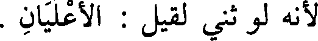
لأنه لو ثني لقيل : الأعليان .
File: 000690.gt.txt (if the image is defective, simply delete all Arabic text and the line will be excluded)
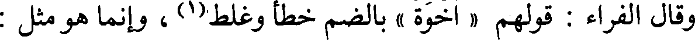
وقال الفراء: قولهم « أخوة » بالضم خطأ وغلط(1) ، وإنما هو مثل :
File: 000691.gt.txt (if the image is defective, simply delete all Arabic text and the line will be excluded)

غلمة وجلة وغزلة ، فضموا أولها(2) تشبيها بكسوة ورشوة .
File: 000692.gt.txt (if the image is defective, simply delete all Arabic text and the line will be excluded)

قال : « والتبيان » جاء مكسور الأول وهو مصدر بينت تبيينا وتبيانا(3) ،
File: 000693.gt.txt (if the image is defective, simply delete all Arabic text and the line will be excluded)
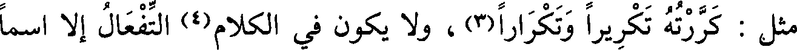
مثل : كررته تكريرا وتكرارا(3) ، ولا يكون في الكلام(4) التفعال إلا اسما
File: 000694.gt.txt (if the image is defective, simply delete all Arabic text and the line will be excluded)
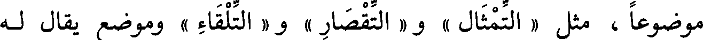
موضوعا ، مثل « التمثال » و« التقصار » و « التلقاء » وموضع يقال له
File: 000695.gt.txt (if the image is defective, simply delete all Arabic text and the line will be excluded)
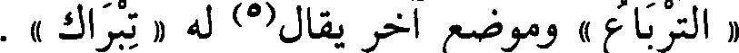
« الترباع » وموضع آخر يقال(5) له « تبراك » .
File: 000696.gt.txt (if the image is defective, simply delete all Arabic text and the line will be excluded)

قال(5): وإنما شبهوا التبيان [627 ] بالعصيان والنسيان .
File: 000697.gt.txt (if the image is defective, simply delete all Arabic text and the line will be excluded)
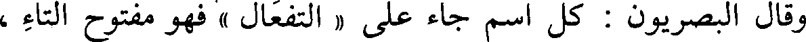
وقال البصريون : كل اسم جاء على « التفعال » فهو مفتوح التاء ،
File: 000698.gt.txt (if the image is defective, simply delete all Arabic text and the line will be excluded)

نحو : « التهيام » و « التهذار » و « التلعاب » و« الترداد » و « التجوال »
File: 000699.gt.txt (if the image is defective, simply delete all Arabic text and the line will be excluded)

و « التسيار » و « التقتال » و « التصعاق »(6) إلا حرفين ، فإنهما جاءا بكسر
File: 000700.gt.txt (if the image is defective, simply delete all Arabic text and the line will be excluded)

التاء ، قالوا « التبيان » و « التلقاء » بمعنى اللقاء ، وأنشد(7) :
File: 000701.gt.txt (if the image is defective, simply delete all Arabic text and the line will be excluded)
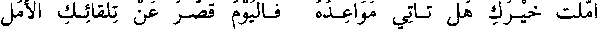
أملت خيـرك هل تـأتي مواعـده فـاليوم قصـر عن تلقائـك الأمل
File: 000702.gt.txt (if the image is defective, simply delete all Arabic text and the line will be excluded)

قال : قولهم : بنى يبني بنيانا - بالضم - أصله الكسرة مثل العصيان
File: 000703.gt.txt (if the image is defective, simply delete all Arabic text and the line will be excluded)

والغشيان ، وكذلك مصادر هذا الباب ، قال : وسمعت « الطغيان
File: 000704.gt.txt (if the image is defective, simply delete all Arabic text and the line will be excluded)

والطغيان » ، و « الغنيان والغنيان » والكسر أحب إلي فيه(8) .
File: 000705.gt.txt (if the image is defective, simply delete all Arabic text and the line will be excluded)

قال(1) : وكان بعض النحويين يزعم أن سيدا ميتا وأشباههما فيعل
File: 000706.gt.txt (if the image is defective, simply delete all Arabic text and the line will be excluded)
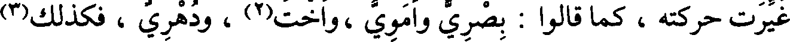
غيرت حركته ، كما قالوا : بصري وأموي ،واخت(2) ، ودهري ، فكذلك(3)
File: 000707.gt.txt (if the image is defective, simply delete all Arabic text and the line will be excluded)
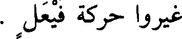
غيروا حركة فيعل .
File: 000708.gt.txt (if the image is defective, simply delete all Arabic text and the line will be excluded)

وقال الفراء : هو فيعل ، واحتج بأنه لا يعرف في الكلام فيعل ، إنما
File: 000709.gt.txt (if the image is defective, simply delete all Arabic text and the line will be excluded)

جاء فيعل ، مثل صيرف وخيفق وضيغم .
File: 000710.gt.txt (if the image is defective, simply delete all Arabic text and the line will be excluded)

وقال بصريون : هو فيعل [622 ] واحتجوا بأنه قد يبنى للمعتل بناء لا
File: 000711.gt.txt (if the image is defective, simply delete all Arabic text and the line will be excluded)

يكون للصحيح ، قالوا : قضاة وغزاة ورماة ، فجمعوه على « فعلة » ولا
File: 000712.gt.txt (if the image is defective, simply delete all Arabic text and the line will be excluded)

يجمعون غير المعتل على ذلك ، فالمعتل جنس على حياله ، والسالم جنس
File: 000713.gt.txt (if the image is defective, simply delete all Arabic text and the line will be excluded)

على حياله(4) .
File: 000714.gt.txt (if the image is defective, simply delete all Arabic text and the line will be excluded)

قالوا(5) : و« فعليل » قليل في الكلام ، قالوا : « غرنيق » لضرب من
File: 000715.gt.txt (if the image is defective, simply delete all Arabic text and the line will be excluded)

طير الماء ، قال(6) : وهو صفة .
File: 000716.gt.txt (if the image is defective, simply delete all Arabic text and the line will be excluded)

عليهم أن يشددوا العين وبعدها ساكن كأنه ألف إعراب ، فخففوا الشديدة(1)
File: 000717.gt.txt (if the image is defective, simply delete all Arabic text and the line will be excluded)

وهم يريدونها ، وزادوا في آخره الهاء ؛ لتكون [639] تكملة للحرف إذ(2)
File: 000718.gt.txt (if the image is defective, simply delete all Arabic text and the line will be excluded)

و« العفي » في العفاة لكنت مصيبا .
File: 000719.gt.txt (if the image is defective, simply delete all Arabic text and the line will be excluded)

قال البصريون في تقدير « أشياء »(4) : هي فعلاء، نقلت همزتها إلى
File: 000720.gt.txt (if the image is defective, simply delete all Arabic text and the line will be excluded)

أولها كما قالوا « عقاب بعنقاة » .
File: 000721.gt.txt (if the image is defective, simply delete all Arabic text and the line will be excluded)

قال الفراء : ولم أجد(5) لهم في ذلك مذهبا يشبه وجه العربية ؛ لأنهم
File: 000722.gt.txt (if the image is defective, simply delete all Arabic text and the line will be excluded)

أكثروا على « الشيء » العلة فقدموا ما لم يقدم ، ولم نسمعه ، وجمعوه وهو
File: 000723.gt.txt (if the image is defective, simply delete all Arabic text and the line will be excluded)

ذكر خفيف(6) على جمع (7) لم يأت إلا فيما واحدته مثقلة مؤنثة مثل
File: 000724.gt.txt (if the image is defective, simply delete all Arabic text and the line will be excluded)

« القصبة » و« القصباء » ، و« الشجرة » و« الشجراء » و « الطرفة »
File: 000725.gt.txt (if the image is defective, simply delete all Arabic text and the line will be excluded)

و« الطرفاء » .
File: 000726.gt.txt (if the image is defective, simply delete all Arabic text and the line will be excluded)

وقال الفراء : قال الكسائي وغيره من أصحابنا : إنما ترك إجراؤها لأنها
File: 000727.gt.txt (if the image is defective, simply delete all Arabic text and the line will be excluded)

شبهت بفعلاء ، وكثرت في الكلام حتى جمعت « أشياوات » كما جمعوا
File: 000728.gt.txt (if the image is defective, simply delete all Arabic text and the line will be excluded)

الفعلاء على الفعلاوات .
File: 000729.gt.txt (if the image is defective, simply delete all Arabic text and the line will be excluded)

قال الفراء : أصل شيء (8) « شيء » على مثال شيع ، ثم جمع على
File: 000730.gt.txt (if the image is defective, simply delete all Arabic text and the line will be excluded)

مفعل ومفعل
File: 000731.gt.txt (if the image is defective, simply delete all Arabic text and the line will be excluded)

« مصحف(1) ومصحف » ، و « مغزل ومغزل » ، و « مخدع
File: 000732.gt.txt (if the image is defective, simply delete all Arabic text and the line will be excluded)

ومخدع » ، و « مطرف ومطرف » ، و « مجسد ومجسد » .
File: 000733.gt.txt (if the image is defective, simply delete all Arabic text and the line will be excluded)

قال بعضهم(2) : المجسد : ما صبغ بالجساد فأجيد وأشبع صبغه ،
File: 000734.gt.txt (if the image is defective, simply delete all Arabic text and the line will be excluded)

والجساد : الزعفران ، والمجسد : الذي يلي (3) الجسد من الثياب .
File: 000735.gt.txt (if the image is defective, simply delete all Arabic text and the line will be excluded)

وقال الفراء : المجسد والمجسد واحد ، وهو من « أجسد » أي:
File: 000736.gt.txt (if the image is defective, simply delete all Arabic text and the line will be excluded)

ألزق(4) بالجلد ، فكسر أوله بعضهم(5) استثقالا للضم ، وكذلك قالوا
File: 000737.gt.txt (if the image is defective, simply delete all Arabic text and the line will be excluded)

« مصحف » وهو مأخوذ [ 580 ] ممن « أصحف » أي : جمعت فيه
File: 000738.gt.txt (if the image is defective, simply delete all Arabic text and the line will be excluded)

الصحف ، فكسر أوله وأصله الضم ، و « مطرف » وهو من « أطرف » أي :
File: 000739.gt.txt (if the image is defective, simply delete all Arabic text and the line will be excluded)

جعل في طرفيه العلمان ، و « مغزل » لإنه أغزل أي(7) أدير وفتل ، قال(8)
File: 000740.gt.txt (if the image is defective, simply delete all Arabic text and the line will be excluded)

فمن ضم الحرف من هذه جاء به على أصله ، ومن كسره فلاستثقاله الضمة .
File: 000741.gt.txt (if the image is defective, simply delete all Arabic text and the line will be excluded)

مفعل ومفعل
File: 000742.gt.txt (if the image is defective, simply delete all Arabic text and the line will be excluded)

قالوا « منخر » و « منخر » بكسر الميم ؛ لا يعرف(9) غيره .
File: 000743.gt.txt (if the image is defective, simply delete all Arabic text and the line will be excluded)

قال الفراء(1) : ومن الشاذ قولهم للرجل « حيوة » ، وللقط
File: 000744.gt.txt (if the image is defective, simply delete all Arabic text and the line will be excluded)

« ضيون » .
File: 000745.gt.txt (if the image is defective, simply delete all Arabic text and the line will be excluded)

وقال سيبويه(2) : قالوا « أرقت الماء » ثم(3) أبدلوا من الهمزة هاء ،
File: 000746.gt.txt (if the image is defective, simply delete all Arabic text and the line will be excluded)

فقالوا : « هرقت الماء(4) » .
File: 000747.gt.txt (if the image is defective, simply delete all Arabic text and the line will be excluded)

وقال الفراء : والهمزة تبدل منها الهاء في أول الحرف كثيرا ؛ قالوا
File: 000748.gt.txt (if the image is defective, simply delete all Arabic text and the line will be excluded)

« هبرية » وأصلها « إبرية » ، وقالوا « هنرت » وأصله « أنرت » ،
File: 000749.gt.txt (if the image is defective, simply delete all Arabic text and the line will be excluded)

و « هرحت »(5) وأصله « أرحت » ، و « هرقت » والأصل(6) « أرقت » .
File: 000750.gt.txt (if the image is defective, simply delete all Arabic text and the line will be excluded)

قال سيبويه(7) : ثم لزمت الهاء فصارت كأنها من نفس الحرف ، ثم
File: 000751.gt.txt (if the image is defective, simply delete all Arabic text and the line will be excluded)

أدخلت الألف بعد(8) على الهاء، وتركت الهاء عوضا من حذفهم العين ؛
File: 000752.gt.txt (if the image is defective, simply delete all Arabic text and the line will be excluded)

لأن أصله(9) أريقت ، فقالوا : « أهرقت » ونظيره [630] « أسطعت
File: 000753.gt.txt (if the image is defective, simply delete all Arabic text and the line will be excluded)

تسطيع » .
File: 000754.gt.txt (if the image is defective, simply delete all Arabic text and the line will be excluded)

قال الفراء : توهموا أن قولهم « أسطعت » أفعلت لأنـه بوزنها(10).
File: 000755.gt.txt (if the image is defective, simply delete all Arabic text and the line will be excluded)

وقال الأحمر :يقال(11) « مششت الدابة » بإظهار التضعيف ، ليس في
File: 000756.gt.txt (if the image is defective, simply delete all Arabic text and the line will be excluded)

فعلة بالواو والياء
File: 000757.gt.txt (if the image is defective, simply delete all Arabic text and the line will be excluded)

هي «الحموة والحمية » ، وهي « النفوة والنفية » لكل [568] ما نفيته ،
File: 000758.gt.txt (if the image is defective, simply delete all Arabic text and the line will be excluded)

وحاف بين « الحفية والحفوة » و« قنية وقنوة » للشيء تقتنيه .
File: 000759.gt.txt (if the image is defective, simply delete all Arabic text and the line will be excluded)

فعلة بالياء ، وأصلها بالواو(1)
File: 000760.gt.txt (if the image is defective, simply delete all Arabic text and the line will be excluded)

قالوا : « ربية » من الربا ، و« حبية » من الاحتباء ، وأصلهما ربوة
File: 000761.gt.txt (if the image is defective, simply delete all Arabic text and the line will be excluded)

باب ما جاء على فعال فيه لغتان
File: 000762.gt.txt (if the image is defective, simply delete all Arabic text and the line will be excluded)

فعال وفعال
File: 000763.gt.txt (if the image is defective, simply delete all Arabic text and the line will be excluded)

وحبوة .
File: 000764.gt.txt (if the image is defective, simply delete all Arabic text and the line will be excluded)

« صداق المرأة وصداقها » ، و« وجار الضبع ووجارها » ، و« ملاك الأمر
File: 000765.gt.txt (if the image is defective, simply delete all Arabic text and the line will be excluded)

وملاكه » و« جهاز العروس وجهازها » ، و« سرار الشهر » وسرار أجود،
File: 000766.gt.txt (if the image is defective, simply delete all Arabic text and the line will be excluded)

و« فكاك الرهن وفكاك » ، و« حجاج العين وحجاج » لعظم (2) الحاجب ،
File: 000767.gt.txt (if the image is defective, simply delete all Arabic text and the line will be excluded)

و« المخاض والمخاض » وجع الولادة ، و« الرضاع والرضاع » ، و« الدجاج
File: 000768.gt.txt (if the image is defective, simply delete all Arabic text and the line will be excluded)

والدجاج » وكذلك الواحدة ، و« نعام عين ونعام عين » ، و« طفاف المكوك
File: 000769.gt.txt (if the image is defective, simply delete all Arabic text and the line will be excluded)

وطفاف » ، وهو مثل « جمام المكوك وجمام » و« الوطاء والوطاء »(3)
File: 000770.gt.txt (if the image is defective, simply delete all Arabic text and the line will be excluded)

و« الوثار والوثار » و« الوقاء والوقاء » ، و« بغاث الطير وبغاث » و« الوحام
File: 000771.gt.txt (if the image is defective, simply delete all Arabic text and the line will be excluded)

والوحام » الشهوة على الحمل ، وهو « الدواء والدواء » [569] ، ورجل
File: 000772.gt.txt (if the image is defective, simply delete all Arabic text and the line will be excluded)

قال : ومثله قولهم « رجل نشيان للأخبار » وهو من(1) « نشيت الخبر »
File: 000773.gt.txt (if the image is defective, simply delete all Arabic text and the line will be excluded)

وأصل(2) الياء في نشيت واو (3) ، فقلبت ياء للكسرة ، فقالوا بالياء ليفرقوا
File: 000774.gt.txt (if the image is defective, simply delete all Arabic text and the line will be excluded)

بينه وبين « نشوان » من السكر .
File: 000775.gt.txt (if the image is defective, simply delete all Arabic text and the line will be excluded)

وجمعوا العيد « أعيادا » وأصله الواو ؛ كراهية أن يوافق جمع العود .
File: 000776.gt.txt (if the image is defective, simply delete all Arabic text and the line will be excluded)

قال (4) : وأهل الحجاز يقولون « القصوى » بالواو ، والقياس
File: 000777.gt.txt (if the image is defective, simply delete all Arabic text and the line will be excluded)

« القصيا » بالياء مثل العليا ، وهو من علوت ، والدنيا وهو من دنوت ،
File: 000778.gt.txt (if the image is defective, simply delete all Arabic text and the line will be excluded)

وهذا (5) نادر خرج على الأصل وروي عنهم « خذ الحلوى أعطه المرى » .
File: 000779.gt.txt (if the image is defective, simply delete all Arabic text and the line will be excluded)

وقال الفراء(6) : ومن البلاد « حزوى » بالواو (7) ، ومن الشاذ (8)
File: 000780.gt.txt (if the image is defective, simply delete all Arabic text and the line will be excluded)

قولهم « حل حبيته » [626] وأصلها بالواو، وقد قالوا « حبوته » أيضا؛
File: 000781.gt.txt (if the image is defective, simply delete all Arabic text and the line will be excluded)

قال : وإنما غيروا واوها لأن الفعل يأتي منها بالزيادة، يقال : احتبيت ، ولا
File: 000782.gt.txt (if the image is defective, simply delete all Arabic text and the line will be excluded)

يقال : حبوت ؛ فلذلك غيرت ، كما قالوا « رجل غديان » بالياء .
File: 000783.gt.txt (if the image is defective, simply delete all Arabic text and the line will be excluded)

قال الفراء : وإنما بنوا « العليا » و « الدنيا » بالياء - وأصلهما الواو -
File: 000784.gt.txt (if the image is defective, simply delete all Arabic text and the line will be excluded)

على ذكرهما(9)، فكان الذكر من هذا النوع يكون للأنثى والذكر، يقال « هو
File: 000785.gt.txt (if the image is defective, simply delete all Arabic text and the line will be excluded)

أعلى منك »و « هي(10)أعلى منك » وكان أعلى قد انتقلت واوه إلى الياء ؛
File: 000786.gt.txt (if the image is defective, simply delete all Arabic text and the line will be excluded)

فعلة وفعلة (1)
File: 000787.gt.txt (if the image is defective, simply delete all Arabic text and the line will be excluded)

خطوت « خطوة وخطوة »، وهي « لحمة الثوب ولحمة »(2) .
File: 000788.gt.txt (if the image is defective, simply delete all Arabic text and the line will be excluded)

قال ابن الأعرابي : لحمة النسب والثوب مفتوحان(3) ، ولحمة السبع
File: 000789.gt.txt (if the image is defective, simply delete all Arabic text and the line will be excluded)

والبازي وكل صائد مضموم . وعن أبي زيد (4) في « لحمة » مثل ذلك
File: 000790.gt.txt (if the image is defective, simply delete all Arabic text and the line will be excluded)

وهي « كفاة الإبل » و « كفاة » وهي أن تفرق فرقتين فيضرب الفحل
File: 000791.gt.txt (if the image is defective, simply delete all Arabic text and the line will be excluded)

سواء .
File: 000792.gt.txt (if the image is defective, simply delete all Arabic text and the line will be excluded)

إحداهما سنة والفرقة الأخرى سنة ، وهي « البلجة والبلجة » ، وهي «الدلجة
File: 000793.gt.txt (if the image is defective, simply delete all Arabic text and the line will be excluded)

والدلجة » ومنهم من يفرق بينهما وقد بينا ذلك ، و« عليه بهلة الله وبهلته » ،
File: 000794.gt.txt (if the image is defective, simply delete all Arabic text and the line will be excluded)

و« جلست نبذة ونبذة » أي : ناحية ، و« حوبة الرجل وحوبته » أم الرجل ،
File: 000795.gt.txt (if the image is defective, simply delete all Arabic text and the line will be excluded)

و« سدفة من الليل وسدفة » و« حسوة وحسوة » ، و « غرفة وغرفة » و « جرعة
File: 000796.gt.txt (if the image is defective, simply delete all Arabic text and the line will be excluded)

وجرعة » ، و « نغبة[566] ونغبة »(5) ، و « لحست لحسة ولحسة » ، و « بقعة
File: 000797.gt.txt (if the image is defective, simply delete all Arabic text and the line will be excluded)

وبقعة » و « برهة من الدهر وبرهة » ، و« جهمة من الليل وجهمة » وهي(6)
File: 000798.gt.txt (if the image is defective, simply delete all Arabic text and the line will be excluded)

بقية من الليل ، و « فلان ينام الصبحة والصبحة » ، و « مالي عليه عرجة ولا
File: 000799.gt.txt (if the image is defective, simply delete all Arabic text and the line will be excluded)

عرجة » .